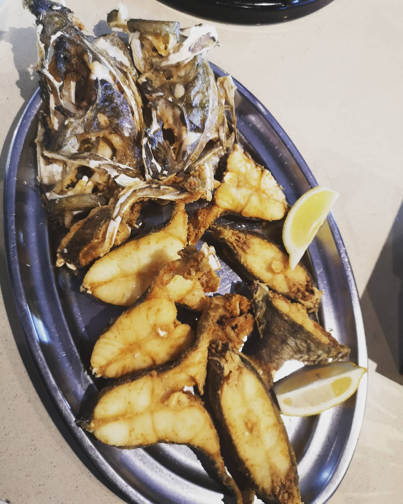
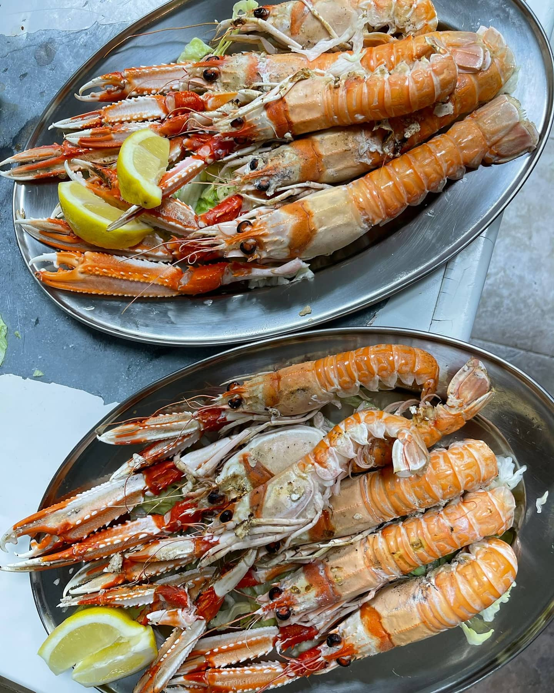
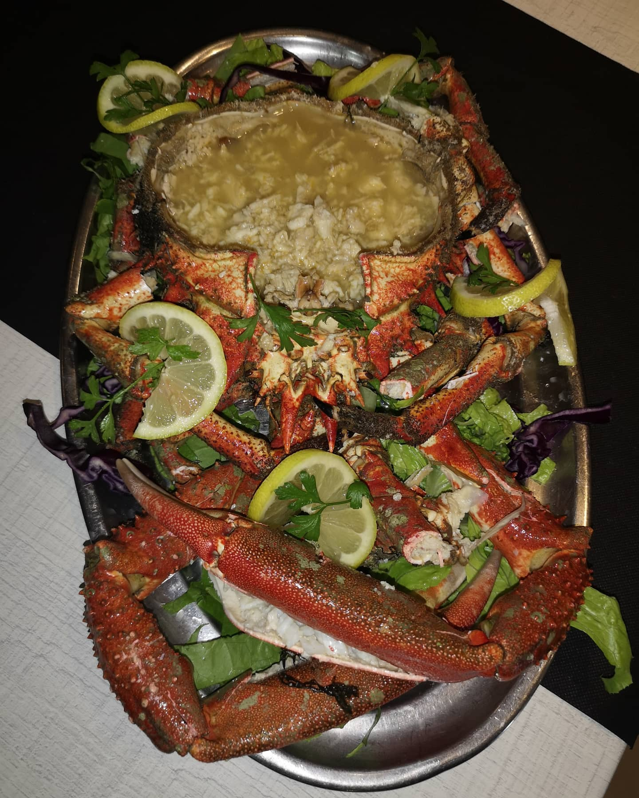
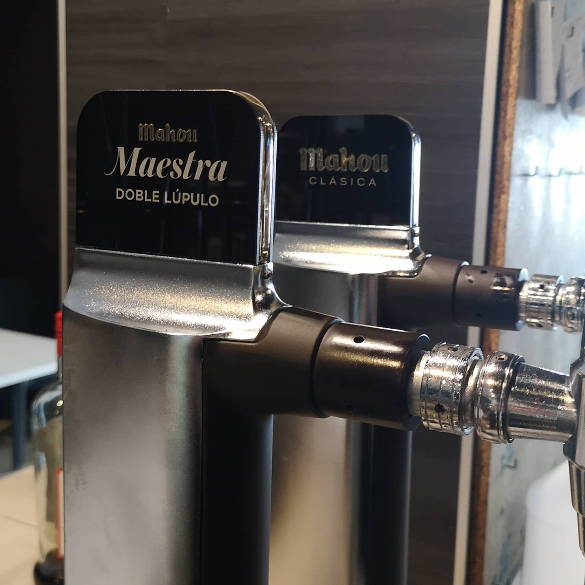

13:00 · Mediodía

P.º Marítimo, 3H
Pescado, marisco, tapas y arroces para pedir sin miedo y compartir sin mirar el reloj.
Producto · fuego · Mediterráneo
Sin discursos largos. Piezas frescas, frituras doradas, marisco al centro y cocina reconocible con acento almeriense.



13:00 · Mediodía
21:30 · Noche
Mira alrededor
La barra, el producto, la mesa que se alarga y el paseo esperando fuera.
Lo dice la mesa
Tu mesa está al otro lado
Elige día, hora y zona preferida. El restaurante confirmará la disponibilidad.
Ven a vernos
Antes de venir
Desde esta web o llamando al 950 34 30 97. La solicitud queda sujeta a confirmación.
No. Las reservas corresponden al servicio de mesa; las tapas quedan fuera de la reserva.
Sí, especialmente en festivos o por temporada. Conviene confirmarlo antes de desplazarse.